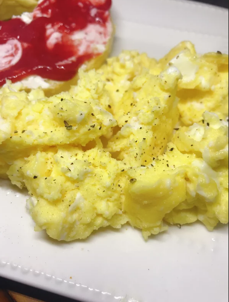

Fast-Making Scrambled Eggs

Welcome to Chicken's nightmare, sorry Kitchen's.
Who cares it is made in the Microwave?. It's tasty, fast and you are hangover so i'll taste bad either way.
This michellin'nt dish wont take you more than 10 minutes and it's good for like too hungry people.
InGrEdiEnts!
- 4 Eggs
- Cooking Spray
- Salt and Pepaaaaaa,
- Any Spice or whatever taste good in your fridge (OPCIONAL)
- 4 more Eggs
Steps bros
- Spray a large glass bowl with cooking spray.
- Crack 1 egg into a small ramekin and then pour into the bowl, whisk egg.
- Repeat with remaining eggs, whisking well after each addition.
- Cook eggs in a microwave oven for 30 seconds; remove from oven and stir.
- Continue cooking in 30-second intervals, stirring after each, until eggs are almost set, about 3 minutes total.
- Season with salt and pepper.
Nutrition
126 calories; protein 11.1g; carbohydrates 0.7g; fat 8.8g; cholesterol 327.4mg; sodium 162mg.